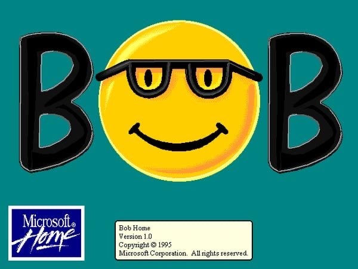
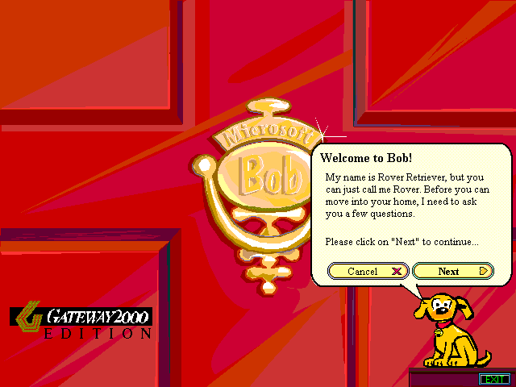
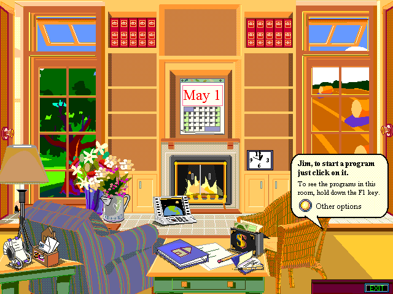
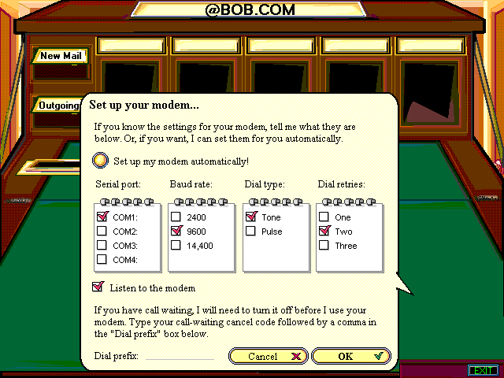

一个失败产品如何预言了 AI Agent 办公室
普通人打开电脑，看到的是什么？
Bob 的回答是：把电脑变成一间房子
没有桌面，没有开始菜单。只有房间、门、家具，和一个叫 Rover 的小狗助手。


点击图片查看原始界面截图
把抽象计算映射成用户熟悉的现实空间——客厅、书房、厨房对应不同的功能区域。
写信？点击桌上的笔和纸。发邮件？点击墙上的信箱。连网？点击调制解调器。不需要理解"双击 .exe"。

Rover 小狗通过气泡引导用户，这是最早的"软件角色感"尝试。
"帮我寄封信"而不是"打开 Word → 找模板 → 保存 → 发邮件"。
发布仅一年就停产，销量约 5.8 万份，远低于微软预期。
不能理解自然语言，不能跨应用完成任务，不能学习用户偏好。用户感受到的不是"智能助理"，而是"挡在我和电脑之间的玩具界面"。
Bob 的元素在微软后续产品中持续出现：
| Bob 时代缺失 | AI 时代的补足 |
|---|---|
| 理解自然语言 | LLM 可以理解复杂意图 |
| 任务规划 | Agent 可以拆解步骤 |
| 跨软件操作 | API、RPA、浏览器控制、GUI agent |
| 个性化 | 长上下文、记忆、企业知识库 |
| 组织协作 | 多 agent、权限、流程、审计 |
| 内容生成 | 文档、邮件、表格、PPT、代码生成 |
这就是 Bob 的"房间和角色"概念在企业 AI 时代的复活版。
真正可能成功的形态，不是把屏幕变成一个卡通办公室。而是三类界面叠加：
"让财务 agent 看一下这个项目预算有没有异常。"用自然语言调用角色——这是最接近 Bob 的部分。
一个 agent 工作台，显示各 agent 状态、正在处理的任务、需要你确认的事项。比卡通房间更适合企业场景。
在 Word 里是合同审查 agent，在 Excel 里是数据分析 agent，在 ERP 里是财务 agent——嵌入现有软件，而不是重新发明一个桌面系统。
角色先行，能力不足。
"我是一个会说话的小狗助手。"
不是先设计可爱的角色，
而是先定义一个清晰的岗位。
最关键的问题不是 UI，而是治理。需要解决：
财务 agent 能不能看 HR 数据？运维 agent 能不能直接重启设备？
Agent 做错了，谁负责？使用者、部门负责人、还是模型厂商？
哪些事可以自动执行，哪些必须人工确认？
Agent 为什么这么判断？引用了哪些数据？执行了哪些动作？
每个软件里都有 AI 助手——Word 帮你写，Excel 帮你分析，邮件帮你回复。这是现在已经发生的阶段。
每个业务职能有自己的 agent——财务 agent、法务 agent、项目 agent。这会成为企业 AI 落地的主战场。
多个 agent 之间自动协作，人类变成目标设定者和关键审批者。这才是真正意义上的"AI 办公室"。
而是以它的底层隐喻复活。
| Bob 的元素 | AI 时代 | 形式 |
|---|---|---|
| 拟人化助手 | 会 | 岗位型 agent |
| 房间/办公室隐喻 | 部分会 | 工作台、组织视图 |
| 卡通角色 | 小范围会 | 教育、儿童、陪伴 |
| 替代桌面系统 | 不太可能 | 现有软件中嵌入 |
| 自然语言操作 | 会 | 主入口之一 |
| 软件替你办事 | 会 | Agent + API + 审批流 |
| 主动提醒 | 会 | 但必须可控、低打扰 |
| 全自动办公 | 有限 | 高风险动作仍需审批 |
玩具化 · 包装层
能力不足 · 挡路
岗位化 · 委托层
能力足够 · 嵌入
等 LLM 读懂人话，等 Agent 能执行任务，
等企业系统准备好 API 和工作流。